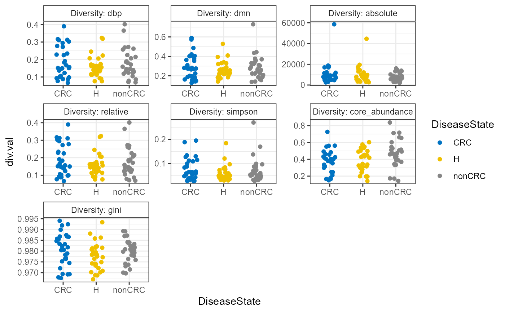

microbiome packageplot_alpha_diversities.RdUtility plot function for diversity measures calcualted by microbiome package.
plot_alpha_diversities(x, type, index.val = "all", plot.type, variableA, palette)
| x |
|
|---|---|
| type | Either diversities (Diversity Index) or dominance (Dominance Index) or evenness (Evenness Index). |
| index.val | see global function in |
| plot.type | Three optons c("stripchart", "boxplot", "violin") |
| variableA | Variable of interested to be checked. This will also be used to color the plot |
| palette | Any of the |
ggplot object. This can be further modified using ggpubr.
Uses the microbiome package global function to calcualte diversities and then returns
a plot.
library(microbiome) library(microbiomeutilities) data("zackular2014") p0 <- zackular2014 p <- plot_alpha_diversities(p0, type = "diversities", index.val = "all", plot.type = "stripchart", variableA = "DiseaseState", palette = "jco")#>#>#>#>#>#>#>#>print(p)